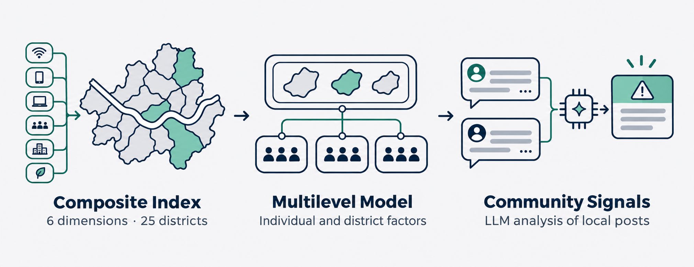
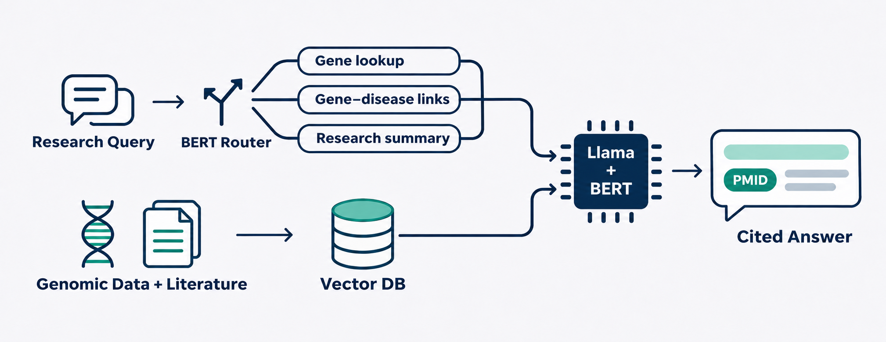
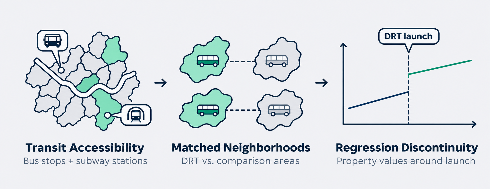

Jiyoon Shin
Hi! I'm a Master's student in Computer Science at Georgia Tech, specializing in Machine Learning. My academic background spans Urban Planning & Engineering, Applied Statistics, and Computer Science, shaping how I approach problems from different perspectives.
My research interests lie in spatiotemporal machine learning and simulation-based evaluation. I'm particularly interested in modeling spatial and temporal dependencies for forecasting, and designing informative test scenarios to evaluate how models and decision-making policies perform under different conditions.
One application I’m especially drawn to is mobility and intelligent transportation systems. Their complexity arises from the interplay of human behavior, infrastructure, and constantly changing conditions, making them particularly challenging and interesting systems to study.
News
- Aug 2026
Began my master’s in Computer Science at Georgia Tech.
- Mar–Jun 2026
Worked as a Data Engineering Intern on the Kearney Digital Transformation team, building data pipelines and automating workflows.
- May 2025–Feb 2026
Worked as a Data Science Intern on the Kakao Mobility AI R&D team, improving ETA prediction and route recommendation models.
- Mar–Jun 2024
Worked as an Undergraduate Research Assistant in the Transportation Planning Lab at Yonsei University, supporting research on travel behavior and transportation demand.
Projects
 Team Project·Ongoing
Team Project·OngoingPredicting One-Year Graft Loss After Liver Transplant
This project studies whether information available at the time of a liver offer can predict the risk of graft loss within one year after transplantation. We compare survival models using donor and recipient characteristics and examine which factors contribute most to their predictions.

Seoul Digital Connectivity Analysis
Where does digital connectivity fall short in Seoul? We compared 25 districts using a six-dimension index and used multilevel modeling to examine individual and district factors. To see how gaps affected residents, we analyzed local posts with an LLM and uncovered recurring weather-related outages in Jungnang-gu that the index missed.

AD-GPT: Large Language Models in Alzheimer's Disease
Alzheimer’s research questions need answers backed by verifiable evidence. AD-GPT retrieves evidence from genomic databases and biomedical literature to generate cited answers. In the study, it produced fewer unverifiable citations than the baseline models.

Impact of Demand-Responsive Transit on Property Values
Does demand-responsive transit affect housing prices in areas with limited transit access? We matched neighborhoods with similar accessibility and used regression discontinuity at service launch. In some matched pairs, prices rose faster or fell less in areas that introduced the service.